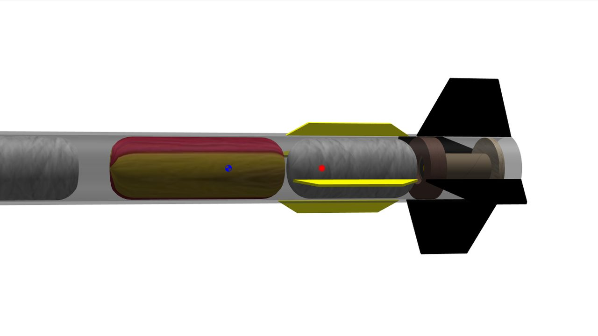
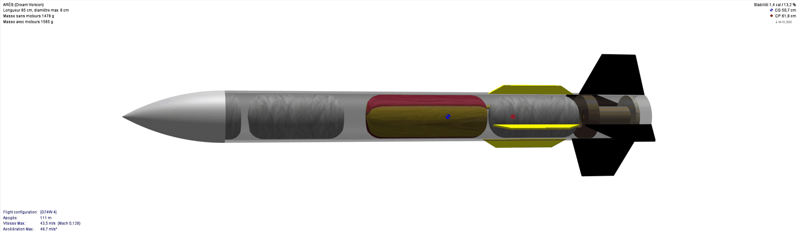
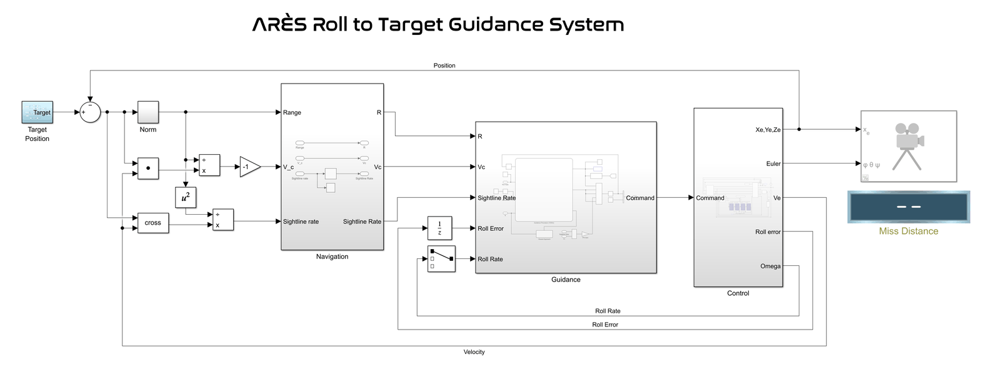
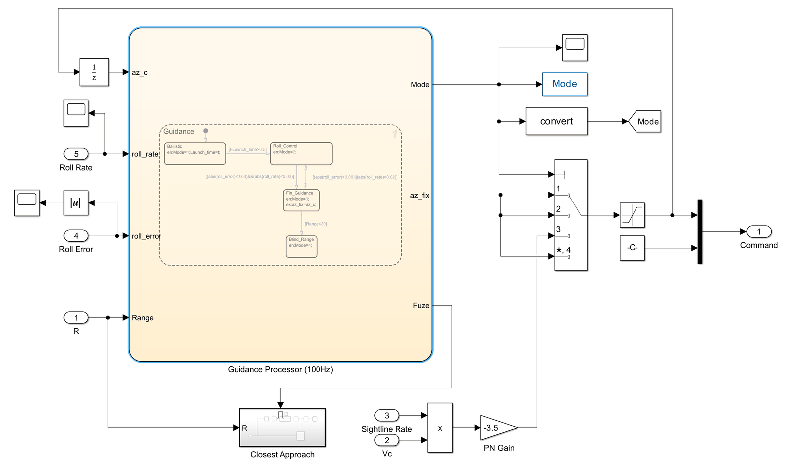
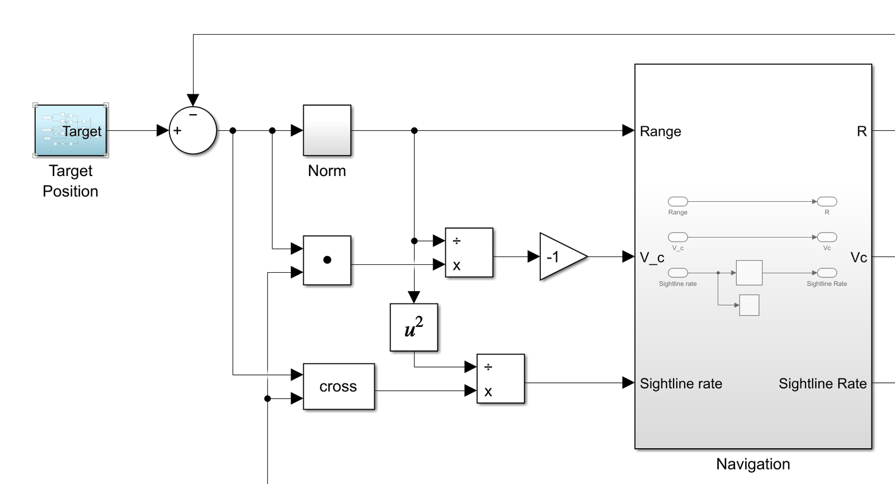

Fin-Controlled Rocket
GNC Lead · Cercle Aérospatial CentraleSupélec · 2025–2026

Overview
This is ARES, the fin-controlled rocket of the Cercle Aérospatial CentraleSupélec (2025–2026). We had one semester and a very small budget.
We limited the scope to roll control on purpose, because we judged 3-axis control too risky. Pitch and yaw control were out of scope.
My role
As GNC Lead, I designed a 6-DoF GNC architecture with Simulink modeling, sensor fusion and PID optimization. I also did the flight electronics.
Results
We flew it twice with roll control only, and roll-axis stabilization worked on both flights.
Report
Control design report (PDF, English excerpt)
An excerpt of the ARES project report, covering my control design work only.
Gallery
Photos and CAD of the rocket, plus screenshots of simulations of the full 6-DoF GNC design. Only roll control was flown.









